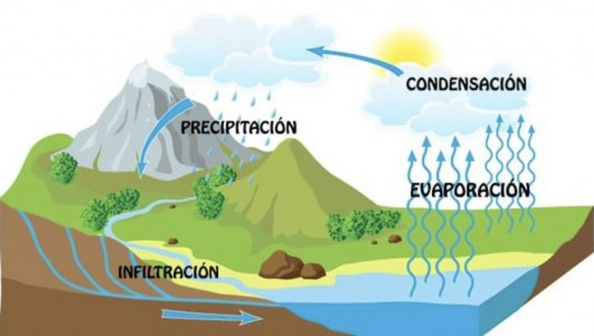

La educación sobre el ciclo del agua es fundamental para comprender cómo funciona este proceso natural y cómo nuestras acciones pueden afectar su equilibrio.
Componentes del ciclo del agua: El ciclo del agua, también conocido como ciclo hidrológico, involucra una serie de procesos continuos mediante los cuales el agua se mueve entre la atmósfera, la superficie terrestre y los cuerpos de agua. Estos procesos incluyen la evaporación, la condensación, la precipitación, la escorrentía, la infiltración y la transpiración de las plantas.
Fuentes de agua: El agua en la Tierra proviene principalmente de dos fuentes: el agua dulce (como la de los ríos, lagos y acuíferos) y el agua salada (como la de los océanos y mares). El ciclo del agua redistribuye constantemente el agua entre estas diferentes reservas, asegurando un suministro constante de agua dulce para los ecosistemas terrestres y humanos.

Importancia del ciclo del agua: El ciclo del agua es esencial para mantener la vida en la Tierra. Proporciona agua para beber, riego agrícola, generación de energía hidroeléctrica, y soporte para los ecosistemas acuáticos y terrestres. Además, el ciclo del agua regula el clima y el clima regional al transportar calor y humedad a través de la atmósfera.
Interferencias humanas: Las actividades humanas pueden afectar el ciclo del agua de varias maneras. Por ejemplo, la deforestación y la urbanización pueden aumentar la escorrentía superficial y reducir la infiltración del agua en el suelo. El bombeo excesivo de aguas subterráneas puede disminuir los niveles de los acuíferos y alterar los flujos naturales de agua. La contaminación del agua también puede afectar la calidad del agua y los ecosistemas acuáticos.
Prácticas de conservación: La educación sobre el ciclo del agua puede ayudar a promover prácticas de conservación que protejan este recurso vital. Esto puede incluir la reducción del consumo de agua, la gestión sostenible de recursos hídricos, la protección de hábitats acuáticos y la prevención de la contaminación del agua.
Cambio climático: El cambio climático está alterando los patrones de precipitación y evaporación en todo el mundo, lo que tiene importantes implicaciones para el ciclo del agua. Comprender cómo el cambio climático afecta el ciclo del agua es crucial para desarrollar estrategias de adaptación y mitigación efectivas.
Cambio climático: El cambio climático está alterando los patrones de precipitación y evaporación en todo el mundo, lo que tiene importantes implicaciones para el ciclo del agua. Comprender cómo el cambio climático afecta el ciclo del agua es crucial para desarrollar estrategias de adaptación y mitigación efectivas.